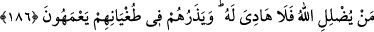

kalmadığını ifade etmektedir.
186. Allah kimi şaşırtırsa, artık onun için yol gösteren yoktur. Ve onları
azgınlıkları içinde şaşkın olarak bırakır.
“Allah kimi şaşırtırsa,” Allah Teâlâ kimi doğru yoldan çıkarır ve Kur’an’a inanmazsa
“artık onun için yol gösteren yoktur. Ve onları azgınlıkları içinde” küfürlerinde haddi
aşmalarında “şaşkın olarak” tereddüt hâlinde “bırakır.” terk eder.
Kamûs’da geçtiği üzere “el-Ameh”, sapıklıkta sürekli bir tereddüt, bir münakaşada
veya bir yolda şaşkınlık içinde olmak yahut da delili tanımamak mânâlarına gelir.
Ayette tefekküre teşvik vardır. Akıllı kişi, vehim, hayal, taklîd ve heva gibi âfetlerden
sâlim bir akıl ile Hz. Peygamber (s.a.v.)’in hâlini düşünse; mûcizeleri bir yana, O’nun
ahlakını ve siyerini tefekkür etse muhakkak sâdık bir peygamber olduğunu ve davet
ettiği şeylerin tümünün hak ve gerçek olduğunu anlar. Allah’ın izniyle bu tefekkür
sâyesinde cehennem ateşinden kurtulur. Nitekim Allah Teâlâ cehennemliklerin durumunu
şöyle haber verir: “Şayet kulak vermiş ve aklımızı kullanmış olsaydık şimdi şu alevli
cehennemin mahkûmları arasında olmazdık.” derler. ” (el-Mülk, 67/10)
“Göklerin ve yerin melekûtuna... bakmazlar mı?” (el-A‘râf, 7/185) ayeti
yaratılanların iki çeşit olduğuna işaret etmektedir:
Biri yoktan varedilenlerdir. Bu, kâinatın bâtınını teşkil eden ve kâinatın kendisiyle
ayakta durduğu melekût âlemidir. Melekût ise Allah’ın kudret elindedir, O’nunla
kaimdir. Nitekim Allah Teâlâ: “Her şeyin melekûtü kendi elinde olan Allah’ın şânı
ne kadar yücedir” (Yâsîn, 36/83) buyurmuştur.
Diğeri ise bir şeyden yaratılanlardır. Bu da kâinatın zâhirini teşkil eden mülk
âlemidir. Mülke göz ile bakıldığı gibi melekûte akıl ve kalb ile bakılır. Akıl
sahiplerinin melekûta bakması, delilleri görmeyi, onlardan hareketle bu kâinatın bir
yaratıcısı ve yapıcısı olduğu hükmüne varmayı ifâde eder. Kalp sahiplerinin melekûta
bakması ise îmanının yakîn (îkân), hatta ıyân (kalb gözüyle görme) olması için nüfûz
ederek gayb şâhidlerini müşâhedeyi ifâde eder. Nitekim ayette “Böylece biz, kesin
iman edenlerden olması için İbrahim’e göklerin ve yerin melekûtünü
gösteriyorduk” (el-En‘âm, 6/75) buyurulmuştur. İşte bu şekilde göklerin ve yerin
melekûtunu nebî veya velîlerine göstermek, noksanlardan münezzeh olan Hakk’ın kadim
bir ilâhî sünnetidir. Onlara âlemin nâsûtunu, melekûtunu, ceberûtunu ve lâhutunu
gösterir. Hakk’a seyr ü sülûk kesilmediği sürece kıyamete kadar bu sünnet devam
edecektir.
Eğer insan için böyle bir ayrıcalık olmasaydı diğer hayvanlardan farkı kalmazdı. Şu
kadar var ki Rahman olan Allah bu nimeti insan cinsine lutfedip yardımına mazhar olan